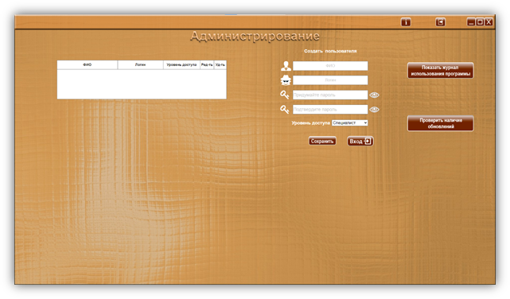
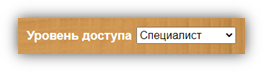
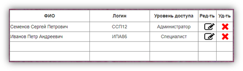
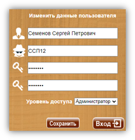
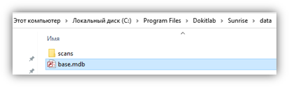

АДМИНИСТРИРОВАНИЕ

На странице «Администрирование» осуществляется добавление (регистрация) новых пользователей, редактирование и удаление данных уже существующих пользователей, а также просмотр журнала использования программы.
Создание (регистрация) нового пользователя
Для регистрации нового пользователя, нужно заполнить поля под заголовком «Создать пользователя»
· В поле «ФИО» необходимо ввести Ф.И.О. пользователя (поле чувствительно к регистру). Данные из этого поля прописываются в протоколы упражнений, в строку «Специалист», для идентификации специалиста, проводившего упражнение.
· В поле «Логин» необходимо придумать и ввести логин пользователя (поле чувствительно к регистру). Данные из этого поля используются для введения в поле «Логин» при входе в программу.
· В поле «Придумайте пароль» нужно придумать и ввести пароль (поле чувствительно к регистру). Пароль должен состоять не менее чем из 6 символов и содержать буквы и цифры!
· В поле «Подтвердите пароль» нужно точно (с учетом регистра)! повторить введенный выше пароль.
 Если вы видите
сообщение программы
Если вы видите
сообщение программы
значит вы ошиблись при повторном вводе пароля. Повторите попытку. Символы, введенные для подтверждения пароля, должны ТОЧНО! (с учетом регистра) совпадать с символами поля «Придумайте пароль»
· Далее нужно присвоить пользователю уровень доступа, при помощи выпадающего меню «Уровень доступа».

Программа имеет два уровня доступа: «Специалист» и «Администратор».
При регистрации нового пользователя в программе, ему нужно присвоить нужный уровень доступа с соответствующими полномочиями:
«Специалист» - имеет доступ ко всем частям программы, за исключением страницы «Администрирование», и соответственно не может добавлять новых пользователей, редактировать и удалять данные ранее зарегистрированных пользователей, выполнять обновление программы, просматривать журнал использования программы.
«Администратор» - имеет доступ только к странице «Администрирование», для добавления новых пользователей, редактирования и/или удаления данные ранее зарегистрированных пользователей, обновления программы, просмотра журнала использования программы.
 Обязательно нажмите кнопку «Сохранить»,
чтобы сохранить введенные данные пользователя!
Обязательно нажмите кнопку «Сохранить»,
чтобы сохранить введенные данные пользователя!
Сохраненные данные пользователей отображаются в таблице пользователей.

 Запомните (запишите) введенные данные (логин и пароль). При
помощи созданного логина и пароля осуществляется вход в программу в дальнейшем,
а также вход на страницу администрирования для создания новых пользователей.
Запомните (запишите) введенные данные (логин и пароль). При
помощи созданного логина и пароля осуществляется вход в программу в дальнейшем,
а также вход на страницу администрирования для создания новых пользователей.
 Если у программы
единственный пользователь, то необходимо создать для него две учетные записи с
разными уровнями доступа! Если будет отсутствовать пользователь с уровнем
доступа «Администратор», Вы не сможете войти на страницу «Администрирование»!
Если у программы
единственный пользователь, то необходимо создать для него две учетные записи с
разными уровнями доступа! Если будет отсутствовать пользователь с уровнем
доступа «Администратор», Вы не сможете войти на страницу «Администрирование»!
Редактирование данных пользователя
Если нужно изменить данные пользователя, то в таблице пользователей воспользуйтесь кнопкой «Редактировать» в строке, напротив ФИО пользователя, данные которого хотите изменить. Данные из строки выбранного пользователя отобразятся в полях под заголовком «Изменить данные пользователя», где будут доступны для редактирования.

 После внесенных изменений необходимо нажать кнопку «Сохранить»!
После внесенных изменений необходимо нажать кнопку «Сохранить»!
Удаление пользователя
Если необходимо удалить пользователя из программы, воспользуйтесь кнопкой «Удалить» в строке, напротив ФИО пользователя, данные которого хотите удалить. Появиться сообщение с предупреждением

Нажатие «Продолжить» удаляет все данные выбранного пользователя.
Нажатие «Отмена» закрывает окно предупреждения, не изменяя и не удаляя данные.
 Удаление
данных необратимо! Будьте внимательны!
Удаление
данных необратимо! Будьте внимательны!
Кнопка «Показать журнал использования программы»
При нажатии открывает в отдельном окне текстовый документ (.rtf), содержащий журнал использования программы. В журнале автоматически регистрируется и отображается информация: дата события, время события, название события (запуск программы, вход пользователя (ФИО) и кол-во попыток входа, выход пользователя, закрытие программы).
Пример записи:
25.09.2020 14:37 Запуск программы.
25.09.2020 14:38 Вход пользователя Семенов С.П.
25.09.2020 16:23 Выход пользователя Семенов С.П.
25.09.2020 16:23 Закрытие программы.
ОБНОВЛЕНИЕ ПО
Кнопка «Проверить наличие обновлений»
При нажатии проверяет наличие обновлений ПО.
- если обновлений не найдено, выводится уведомление

- если обнаружена новая версия ПО, то выводится уведомление

 Кнопка «Открыть
руководство пользователя» - открывает окно «Справка» с информацией об
обновлении ПО
Кнопка «Открыть
руководство пользователя» - открывает окно «Справка» с информацией об
обновлении ПО
 Кнопка
«Отменить» - закрывает окно уведомления, не скачивая новую версию ПО.
Кнопка
«Отменить» - закрывает окно уведомления, не скачивая новую версию ПО.
Кнопка «Скачать» - открывает окно для выбора места загрузки ПО. Выберите место загрузки установочного файла для обновления ПО.
УСТАНОВКА ОБНОВЛЕНИЯ
 В процессе установки будут заменены
все файлы программы, за исключением базы данных, тем не менее, ПЕРЕД УСТАНОВКОЙ
ОБНОВЛЕНИЙ, ОБЯЗАТЕЛЬНО СОХРАНИТЕ РЕЗЕРВНУЮ КОПИЮ БАЗЫ ДАННЫХ! В случае
непредвиденных ошибок вы сможете восстановить все данные из резервной копии, в
противном случае все данные могут быть утеряны!
В процессе установки будут заменены
все файлы программы, за исключением базы данных, тем не менее, ПЕРЕД УСТАНОВКОЙ
ОБНОВЛЕНИЙ, ОБЯЗАТЕЛЬНО СОХРАНИТЕ РЕЗЕРВНУЮ КОПИЮ БАЗЫ ДАННЫХ! В случае
непредвиденных ошибок вы сможете восстановить все данные из резервной копии, в
противном случае все данные могут быть утеряны!
Файл с базой данных «base.mdb» находится (при условии установки программы с путем «по умолчанию») в папке C:\Program Files\Dokitlab\Sunrise\data:

Файл с базой данных «base.mdb» содержит: список пациентов, данные пациентов (включая протоколы фиксации выполнения упражнений), данные пользователей (ФИО, логины, пароли).
Необходимо регулярно делать резервную копию файла «base.mdb» на сторонний носитель либо вручную, либо при помощи программ для автоматического резервного копирования (например, SyncBackFree). Это поможет сохранить базу данных в случае проблем с ОС, жестким диском или на случай несанкционированного удаления.
 Производитель не имеет доступа к вашей базе данных,
поэтому вся ответственность по ее сохранению лежит на пользователях данного ПО.
Производитель не имеет доступа к вашей базе данных,
поэтому вся ответственность по ее сохранению лежит на пользователях данного ПО.
Установка обновления идентична процедуре начальной установки ПО.
· Нажать правой кнопкой мыши на скачанном файле SunriseSetup_V (номер версии ПО).exe и в открывшемся меню левой кнопкой мыши выбрать пункт «Запуск от имени администратора».
· Разрешить приложению внести изменения на устройстве при запросе контроля учетных записей. Нажать кнопку «Да».
· Следуйте инструкциям на экране. В окне выбора места установки укажите в какой папке установлена программа (если при начальной установке путь не изменялся, то по умолчанию программа устанавливалась в папку C:\Program Files\Dokitlab\Sunrise)